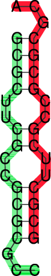
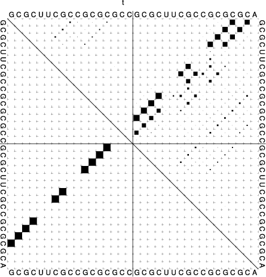
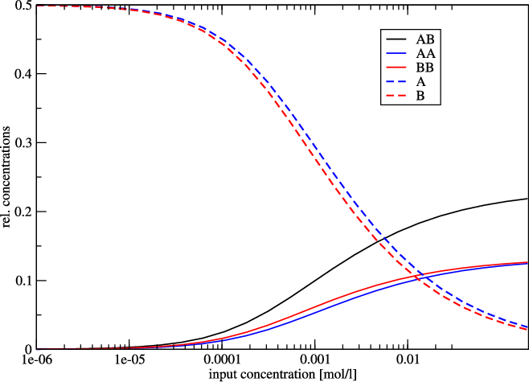

The Program RNAcofold
Introduction
RNAcofold works much like RNAfold but uses two RNA sequences as input
which are then allowed to form a dimer structure. In the input the two RNA
sequences should be concatenated using the & character as separator. As
in RNAfold the -p option can be used to compute partition function
and base pairing probabilities.
Since dimer formation is concentration dependent, RNAcofold can be used
to compute equilibrium concentrations for all five monomer and
(homo/hetero)-dimer species, given input concentrations for the monomers
(see the man page for details).
Two Sequences one Structure
Prepare a sequence file (
t.seq) for input that looks like this:>t GCGCUUCGCCGCGCGCC&GCGCUUCGCCGCGCGCA
Compute the
MFEand the ensemble propertiesLook at the generated PostScript files
t_ss.psandt_dp.ps
$ RNAcofold -p < t.seq
>t
GCGCUUCGCCGCGCGCC&GCGCUUCGCCGCGCGCA
((((..((..((((...&))))..))..))))... (-17.70)
((((..{(,.((((,,.&))))..}),.)))),,. [-18.26]
frequency of mfe structure in ensemble 0.401754 , delta G binding= -3.95
|  |  |
In the dot plot a cross marks the chain break between the two concatenated sequences.
Concentration Dependency
Cofolding is an intermolecular process, therefore whether duplex formation will actually occur is concentration dependent. Trivially, if one of the molecules is not present, no dimers are going to be formed. The partition functions of the molecules give us the equilibrium constants:
with these and mass conservation, the equilibrium concentration of homodimers, heterodimers and monomers can be computed in dependence of the start concentrations of the two molecules.
This is most easily done by creating a file with the initial concentrations of molecules \(A\) and \(B\) in two columns:
[a_1]([mol/l]) [b_1]([mol/l])
[a_2]([mol/l]) [b_2]([mol/l])
[...]
[a_n]([mol/l]) & [b_n]([mol/l])
Prepare a concentration file for input with this little
perlscript:$ perl -e '$c=1e-07; do {print "$c\t$c\n"; $c*=1.71;} while $c<0.2' > concfileThis script creates a file displaying values from 1e-07 to just below 0.2, with 1.71-fold steps in between. For convenience, concentration of molecule A is the same as concentration of molecule B in each row. This will facilitate visualization of the results.
Compute the
MFE, the ensemble properties and the concentration dependency of hybridization:$ RNAcofold -f concfile < t.seq > cofold.out
Look at the generated output with:
$ less cofold.out
which should be similar to:
[...] Free Energies: AB AA BB A B -18.261023 -17.562553 -18.274376 -7.017902 -7.290237 Initial concentrations relative Equilibrium concentrations A B AB AA BB A B 1e-07 1e-07 0.00003 0.00002 0.00002 0.49994 0.49993 [...]
The five different free energies were printed out first, followed by a list of all the equilibrium concentrations, where the first two columns denote the initial (absolute) concentrations of molecules \(A\) and \(B\), respectively. The next five columns denote the equilibrium concentrations of dimers and monomers, relative to the total particle number.
Note
The concentrations don’t add up to one, except in the case where no dimers are built – if you want to know the fraction of particles in a dimer, you have to take the relative dimer concentrations times 2.
Since relative concentrations of species depend on two independent values -
initial concentration of A as well as initial concentration of B - it is not
trivial to visualize the results. For this reason we used the same concentration
for A and for B. Another possibility would be to keep the initial concentration of
one molecule constant.
As an example we show the following plot of t.seq.
Now we use some commandline tools to render our plot. We use tail -n +11 to
show all lines starting with line 11 (1-10 are cut) and pipe it into an awk
command, which prints every column but the first from our input.
This is then piped to xmgrace.
With -log x -nxy - we tell it to plot the x axis in logarithmic scale and to
read data file in X Y1 Y2 … format.
$ tail -n +11 cofold.out | awk '{print $2, $3, $4, $5, $6, $7}' | xmgrace -log x -nxy -
Concentration Dependency Plot
{kind=link}
Since the two sequences are almost identical, the monomer and homo-dimer concentrations behave very similarly. In this example, at a concentration of about 1 mmol 50% of the molecule is still in monomer form.